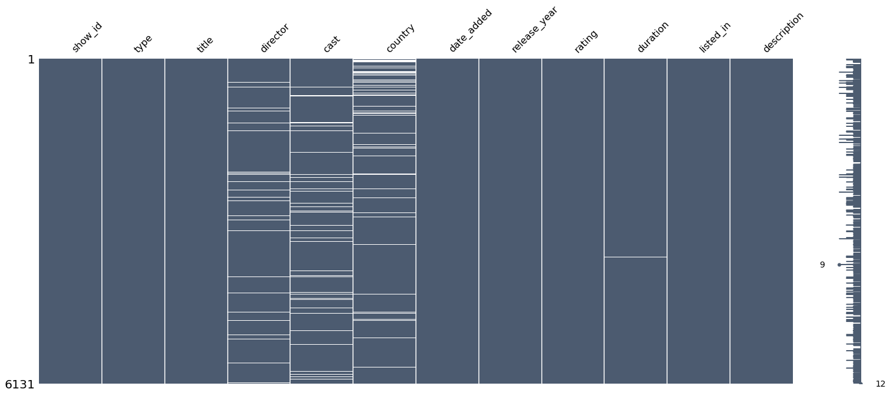
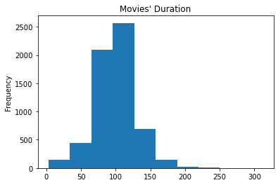
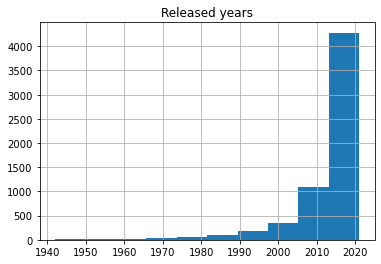
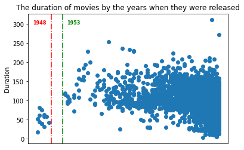
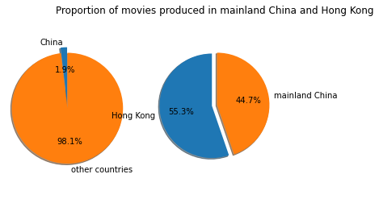
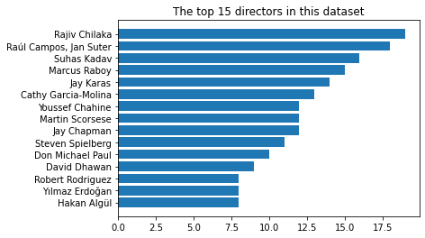
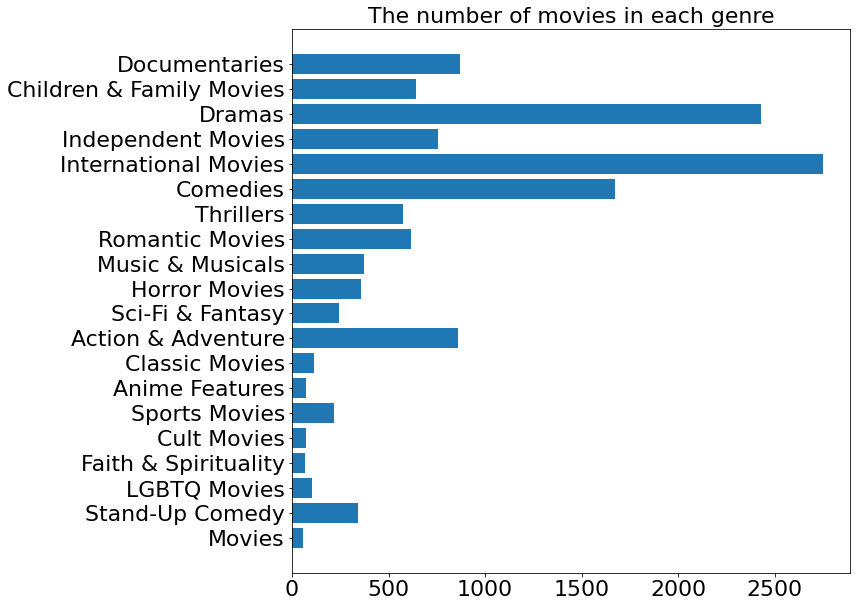

import pandas as pd
import nltk
import matplotlib.pyplot as plt
import ipywidgets
import gensim
import re
import wordcloud
import altair
from nltk.tokenize import word_tokenize, sent_tokenize
from nltk.corpus import stopwords
from string import punctuation
from nltk.stem.porter import PorterStemmer
from gensim import corpora, modelsIntroduction
If you are a movie fan, you might notice that in most movie recommendation websites, apart from the category the movie is classified in, there’s usually some descriptive tags attached to each movie. The tags can describe the character in the movie, such as The Dark Knight which has the “superhero” tag, or an element in the movie, like the tag “dinosaur” on Jurassic World. Sometimes, the tag could even be the name of a movie star, such as “Leonardo” on Titanic. From a perspective of a movie fan, it’s undoubtedly that these tags display the attractive points of the movie more vividly than the tedious classifications “Classic movies” and “Action movies”. Therefore, people began to extract tags from the content of the films, utilizing machine learning and natural language processing methods.
This project is aimed to explore a Netflix movies dataset, to gain some insights about movie industry and make an attempt to extract some tags from the movie descriptions.
Methods
Dataset Introduction
This notebook includes a movie dataset from https://www.kaggle.com/datasets/shivamb/netflix-shows, which consists of listings of all the movies and TV-shows available on Netflix, along with details such as - cast, directors, ratings, release year, duration, etc.
Specifically, here’s the meaning of each column in the dataset:
show_id: Unique ID for every Movie / Tv Show
type: Identifier - A Movie or TV Show
title: Title of the Movie / Tv Show
director: Director of the Movie
cast: Actors involved in the movie / show
country: Country where the movie / show was produced
date_added: Date it was added on Netflix
release_year: Actual Release year of the move / show
rating: TV Rating of the movie / show
duration: Total Duration - in minutes or number of seasons
listed_in: Genere
description: The summary descriptionLDA model
Latent Dirichlet allocation (LDA) is a widey used topic-generating model. The model can identify the representative topics underlying a document collection or a corpus. This model produces topics based on bag-of-word feature, that each document is represented as a vector, in which every word corresponds to an id and its appearing frequency in the document. When producing the topics, The model samples a document-specific multinomial distribution over topics from Dirichlet distribution, and samples the word in the document from the corresponding multinomial distribution.
📊 Exploratory Analysis & Results
1. 🎥 Data Preprocessing
Import the libraries
Import the dataset and create a dataframe for movies
df = pd.read_csv("data/netflix_titles.csv")
movies = df[df["type"]=="Movie"]
movies.index = range(len(movies))Column information
<class 'pandas.core.frame.DataFrame'>
RangeIndex: 6131 entries, 0 to 6130
Data columns (total 12 columns):
# Column Non-Null Count Dtype
--- ------ -------------- -----
0 show_id 6131 non-null object
1 type 6131 non-null object
2 title 6131 non-null object
3 director 5943 non-null object
4 cast 5656 non-null object
5 country 5691 non-null object
6 date_added 6131 non-null object
7 release_year 6131 non-null int64
8 rating 6129 non-null object
9 duration 6128 non-null object
10 listed_in 6131 non-null object
11 description 6131 non-null object
dtypes: int64(1), object(11)
memory usage: 574.9+ KBMissing values visualization
<AxesSubplot:>
🍿️Comment: - The missing values are distributed in columns “director”, “cast”, “country” and “duration”.
Sample rows
| show_id | type | title | director | cast | country | date_added | release_year | rating | duration | listed_in | description | |
|---|---|---|---|---|---|---|---|---|---|---|---|---|
| 2227 | s3449 | Movie | Brother in Love | Onur Bilgetay | Cem Gelinoğlu, Melis Babadag, Ege Kökenli, Müf... | Turkey | October 4, 2019 | 2019 | TV-MA | 110 min | Comedies, International Movies, Romantic Movies | A robbery leaves a proprietor penniless before... |
| 4570 | s6849 | Movie | Ghost Tears | Kazuchika Kise | Maaya Sakamoto, Ikkyu Juku, Kenichirou Matsuda... | Japan | February 24, 2019 | 2014 | TV-MA | 58 min | Action & Adventure, Anime Features, Internatio... | As Motoko and Batou attempt to thwart a myster... |
| 3034 | s4740 | Movie | Being Napoleon | Jesse Handsher, Olivier Roland | Mark Schneider, Frank Samson | United States | August 1, 2018 | 2018 | TV-MA | 88 min | Documentaries | On the 200th anniversary of the Battle of Wate... |
| 2129 | s3281 | Movie | The Garden of Words | Makoto Shinkai | Miyu Irino, Kana Hanazawa, Fumi Hirano, Takesh... | Japan | November 15, 2019 | 2013 | TV-14 | 46 min | Anime Features, International Movies, Romantic... | When a lonely teenager skips his morning class... |
| 5231 | s7687 | Movie | Outlawed | Adam Collins, Luke Radford | Adam Collins, Jessica Norris, Ian Hitchens, St... | United Kingdom | February 15, 2019 | 2018 | TV-MA | 102 min | Action & Adventure | After a failed mission, an ex-Royal Marines Co... |
🍿️Comment: - Based on the information in these rows, I converted the values in “duration” column into integers and the values in “date_added” column into date, to prepare them for plotting in the next section.
2. 📈Exploratory Analysis
Visualization 1

🍿️Comment: - The histogram shows that most movies on Netflix are about 100 minutes. The longest movie contained in this dataframe is about to reach 300 minutes, nearly 5 hours.
Visualization 2

🍿️Comment: - Most movies included in the dataframe are released in recent 10 years.
Visualization 3

🍿️Comments: - There’s blank area between 1948 and 1953. - The duration of all movies shot before 1948 are below 100 minutes. - There’s an increase of movies duration after 1953, that most movies’ duration surpass 100 minutes and the longest one even reaches 200 minutes. - The short movies didn’t quit the stage. In recent 10 years, there are still many movies with the duration below 50 minutes.
Visualization 4

🍿️Comment: - Few films produced in mainland China are available on Netflix. The number of movies on Netflix produced in Hong Kong even surpasses that of mainland China.
Visualization 5

🍿️Comment: - There are many renowned directors such as “Christopher Nolan” and “Alfred Hitchcock” who have directed many well-known movies are not included, from which it’s reasonable to infer that many popular movies aren’t available on Netflix or they didn’t be collected by this dataset.
Visualization 6

🍿️Comments: - Apart from those movies that have been clearly categorized, there’s a type named “Movies”, which suggests that movies in this type are not categorized due to some reason. We will examine the content of these movies and determine how should they be classified. - There aren’t clear boundary between some of the categories, which means a movie can have multiple categories. The dim boundary may confuse the viewers and thus it’s necessary to give these movies representative tags. - Through the names of some categories we can roughly predict the content of the movies. For instance, Faith & Spirituality movies may contain a lot of religious elements. This provides the possibility for the afterwards tag prediction task based on the descriptions of movies.
Conclusion
The project has successfully extracted tags from the corpus of a category of movies and has made the outcome visualized. Besides, the result manifests the feasibility to extract keywords from a set of short paragraphs that share some common features, so the methodology might be useful in the future to extract keywords from a set of comments with similarity in the topic and the sentiment.
Movie tags extraction is a promising way to increase the popularity of underestimated movies, and enables more people to enjoy the fun of watching a film that fits their appetites in the holiday. With the rapid development of data science, I believe that in the near future, not only the movies, but also the classic novel, the operas and all other forms of art will be classified and stored in a more fine-grained way, which will make it easier for people to study on them, and dig out more interesting points about them.
If you have any feedbacks or suggestions on how to improve my work, please let me know in the comments.
Thank you!